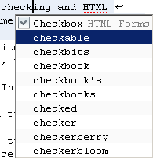
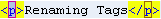

The HTML Source Editor is a full-featured text editor that is integrated with other parts of the IDE. You open the Source Editor by creating a new HTML file or double-clicking a HTML file node in the Projects window, Files window, or Navigator window.
The HTML editor has the following features:
The top of the Source Editor has a tab for each open document. Each tab shows the name of the document. If the document has been modified and has not been saved, there is an asterisk (*) after its name.
If multiple files are open, you can split the Source Editor view by clicking and dragging the tab. As you drag to different parts of the editing area, you see a red outline that shows you where the new window will open. When one of these boxes appears, you can drop the document and split the pane.
You can right-click a tab to access the following commands:
The editor toolbar is at the top of the Source Editor window. The toolbar has buttons for various navigating and editing shortcuts, which vary according to the type of file you are editing. Hold the cursor over a button to display a description of the command.
Go to Window > Palette or press Ctrl-Shift-8 and the Palette opens on the right side of the Source Editor. Code snippets for many of the most common HTML tags are provided, grouped according to their function:
The left margin displays annotation glyphs that indicate line status, such as warnings.
You can right-click the left margin to display a pop-up menu. The margin can also optionally display line numbers.
The error stripe is the strip to the right of the right scroll bar and contains marks for various things in your file, such as errors, bookmarks, and comments for the To Do list. The error stripe represents the whole file, not just the lines currently displayed. You can immediately identify whether your file has any errors without having to scroll through the entire file. You can double-click a mark in the error stripe to jump to the line that the mark refers to.
The Source Editor status line is in the bottom right corner of the IDE. The first area of the status line shows the current line number and row number in the form line:row. The second area of the status line indicates the insertion mode (INS or OVR). The text area on the right is used for status messages.
Source code displayed in the Source Editor is syntactically colored. For example, all HTML keywords are shown in blue and all HTML comments in light gray.
The IDE's code completion feature helps you fill in code and tags as you are typing. Code completion is available for PHP, HTML, and XML files. Code completion applies both to tag names and attributes.
With your cursor inside text in an HTML document, press Ctrl-Space and a menu of hints appears. The hints include spell checking and HTML objects (the selection of objects is the same as in the palette.
Use the left and right arrows to move your cursor, and a new set of context-relevant hints or code completion options appears for every cursor position.
Select an item from the list of hints and the IDE inserts this item into your document. After you select an item, code completion closes. Press Ctrl-Space to reopen code completion.
You can surround text with HTML tags. Select text in the editor and press Alt-Enter, then select Surround With Tags. The selected text is surrounded with tags and the cursor is in the opening tag. Type the tag you want and the closing tag automatically changes to match. See also Renaming Tags.
To rename a tag, place your cursor inside either the opening or closing tag and press Ctrl-R. The name of the tag is surrounded by a red box. 
Type the tag you want. Opening and closing tags change at the same time. Press Enter when you are done.
When the Source Editor is in insert mode, the default insertion point is a vertical bar, and text that you type is inserted. In overwrite mode, the default insertion point is a solid block, and text that you type replaces the existing text.
Use the Insert key to toggle between the two modes.
Whenever the insertion point in the Source Editor is located immediately after a brace, bracket, or parenthesis, the matching brace, bracket, or parenthesis is highlighted.